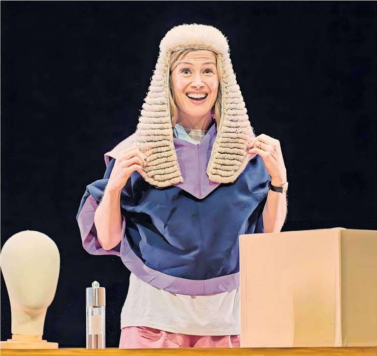
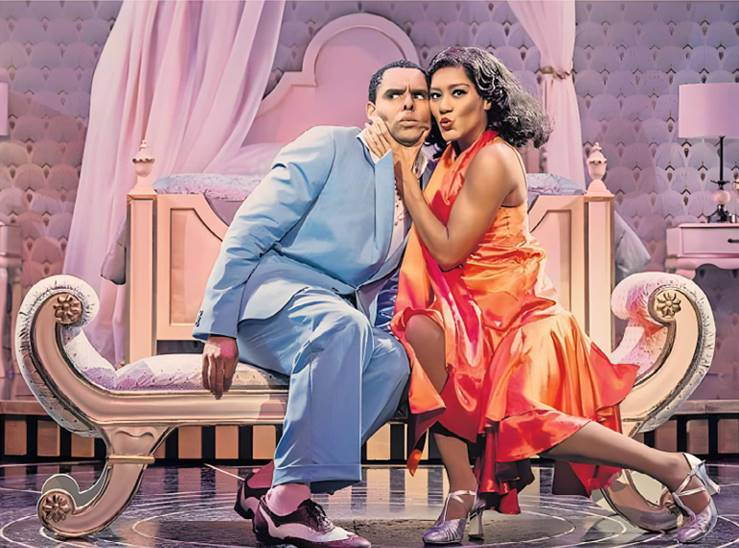

"You're not the judge of me!" cries Harry to his mum in the midst of a fraught exchange. It's a charge levelled by many an irate teenage child at a parent, only here it acquires formidable weight. In Suzie Miller's Inter Alia, Jessica is indeed a judge and the friction between her professional and personal roles will build to breaking point as the play corkscrews into a sweaty-palmed nightmare.
Following on from Miller's blazing hit, Prima Facie, it's another coruscating scrutiny of the shortcomings of the legal system when it comes to rape, sexual assault and consent. Miller puts the system in the dock and finds it wanting.
But she also digs deeper. This is a chilling study of the difficulty of bringing up children against a backdrop of malign online influence and violent pornography. Led by a tremendous performance from Rosamund Pike, who never leaves the stage, it's immensely potent, if flawed.
Again the focus is a successful female lawyer and again Miller has written a fantastic role for a woman. In Prima Facie, Tessa (played sensationally by Jodie Comer) is a defence barrister who is thrust suddenly into the other side of the system when she is raped on a date. Jessica in Inter Alia is a crown court judge, who has worked her way up through a historically masculine environment and is still beset by caveman attitudes. As the play begins, with a flourish of drums and electric guitar (played by her son and husband), she rises up through the stage like a rock goddess, mic in hand, ready to put down, with withering politeness, a sexist lawyer in her court. She excels at knocking down victim-blaming stereotypes from defence barristers; she knows how hard it is to secure a guilty verdict in a rape case.
She is also a wife and mother, managing legal files alongside frantic phone calls about missing shirts and dinner ingredients, and worrying about her sensitive son who has been bullied. Pike is very funny as she juggles wig, yellow Marigolds and slinky party frock, belting out drunken karaoke one minute, handing down sentence the next and then shovelling plates into the sink.
All this comes crashing together when Harry (Jasper Talbot), who has just turned 18, attends a drunken party with disastrous consequences and Jess is plunged into a quagmire of moral, legal and maternal guilt. She and her KC husband Michael (Jamie Glover) know how to work the system in favour of Harry's defence. They also know this means justice won't be served. Then there is Harry, miserable, scared and ultimately tormented by guilt.
Huge questions surge across the stage about responsibility, accountability, morality and justice. Justin Martin's hurtling production conveys the sense of free-falling panic, while Miriam Buether's set — a well-appointed kitchen surrounded by looming trees — smartly suggests today's online equivalent of a threatening fairytale forest.
Miller's style, in which everything is filtered through Jessica's churning mind, works well in plunging us into her nightmare. It is limiting dramatically, however, sometimes too close to commentary and leaving less room for the other characters, who feel as if they need more time, particularly given the subject matter. But what is never in doubt is the immense importance of what Miller is tackling or the power of Pike's performance, which is simply superb.
"Opening nights make her terribly jumpy," says producer Horace Hardwick of his wife Madge in Top Hat. She wouldn’t have been alone on opening night of Kathleen Marshall’s new production: an unexpectedly slippery stage stopped the show within minutes, leading to an impromptu prologue of floor swabbing and a floor-test as only musical theatre can do it: dazzling spins, sizzling tap moves and a few high kicks for good measure. It all seemed quite fitting for a show that boasts “Let’s Face the Music and Dance” as one of its peerless numbers and only added to the general bonhomie of the whole evening, which has all the delight — but, let’s be honest, also the nutritional content — of a sweet summer sorbet.
The 1935 film revels in the pairing of Fred Astaire, floating like chiffon on a breeze, and Ginger Rogers, famously doing everything he did but “backwards and in high heels”. Adapted for the stage in 2011 by Matthew White and Howard Jacques, it looks a little exposed. The plot is in the same neighbourhood as some of Shakespeare’s mistaken identity comedies, though it never summons quite the same enthusiasm for nuance and depth. Broadway star Jerry, in London for a revue, falls for independent-spirited model Dale, but due to a mix-up the two nearly miss their chance, leading to all sorts of capers in Venice, a marriage that isn’t a marriage and a few lessons in humility. That’s about it.
It’s Irving Berlin’s songs we’re really here for, and the silky glory of those dance numbers. They are joyously delivered here, with Marshall’s effervescent choreography kicking up a storm. Marshall directed and choreographed the outstanding Anything Goes at the Barbican in 2021, and she is expert in striking sparks off a stage. Phillip Attmore brings genuine charm to Jerry — a sense that this self-assured man has actually met his match in Dale — and he’s a dazzling dancer, perfecting that air of astonishment as his feet fly sensationally almost without his bidding. Lucy St Louis is more than a match as Dale: a feather-light dancer with a beautiful, crystal voice, she gives her character a fine sense of self-worth.
They’re joined by Clive Carter, drolly stressed as Horace and handling some groanworthy gags, and the formidable Sally Ann Triplett as a Madge who could slice ice with a look. Alex Gibson-Giorgio revels in the portrayal of an Italian fashion designer who is as authentic as pineapple on pizza — all rrrrrrolling Rs and clicking heels. And James Clyde broods enjoyably as Horace’s saturnine valet Bates, a kind of cross between Jeeves and melancholy Jaques from Shakespeare’s As You Like It.
But it all begins to feel a little effortful in the second half, as the narrative wanders into increasingly silly excesses, and even the grace of “Cheek to Cheek” doesn’t quite lift it enough. It’s not up there, then, with some of Chichester’s finest summer musicals — it doesn't have the heft. But as an effervescent seasonal treat, it slips down nicely.
To September 6, cft.org.uk